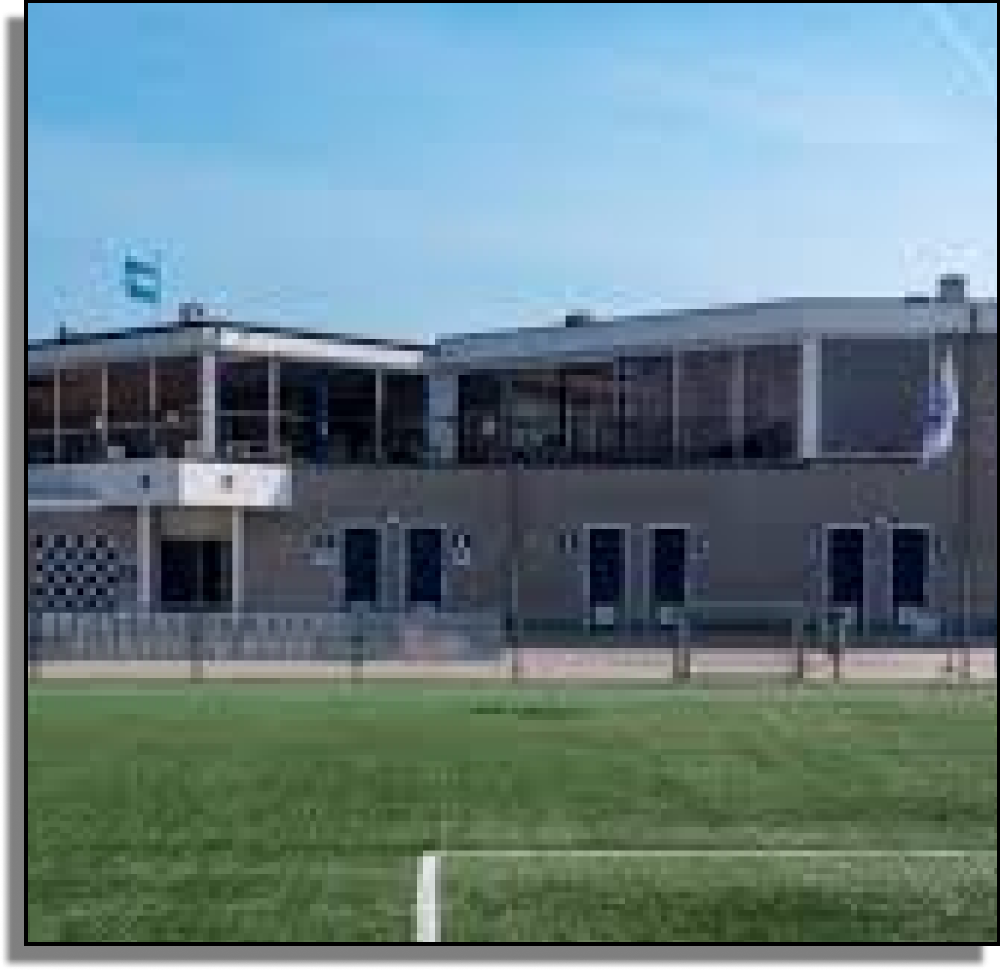
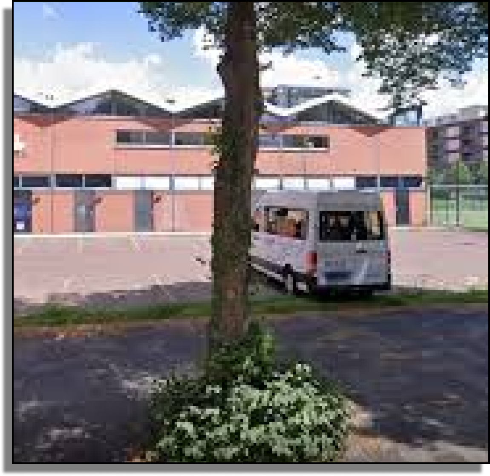
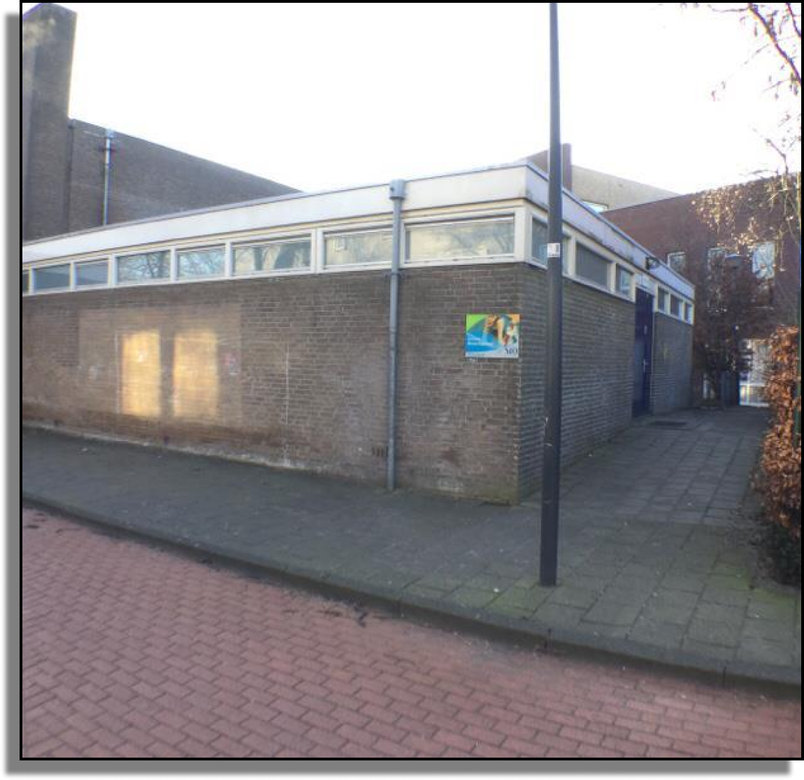
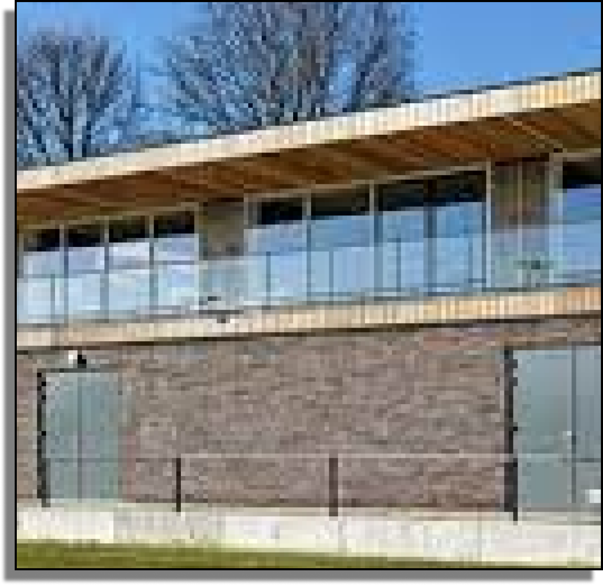

Top Football Locations:
- Community Parks: Great for casual games and practice.
- Sports Complexes: Equipped with professional facilities.
- School Fields: Accessible and well-maintained.
- Indoor Arenas: Perfect for all-weather play.

Finding the perfect place to play football can make all the difference in your game. Whether you're looking for a casual pickup game or a competitive match, Haarlem has a variety of locations to suit your needs.


Haarlem offers a diverse range of football locations, each with its unique features and amenities. From well-maintained community parks to state-of-the-art sports complexes, you'll find the perfect spot to enjoy the game.

Explore our interactive map to find the best football locations near you. Whether you're looking for a place to practice your skills or join a local league, our guide will help you find the perfect spot.